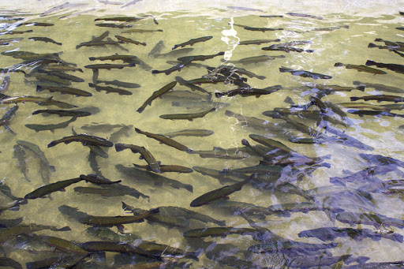

Tipos de Acuicultura.

Clasificación:
1. Socioeconómica.
2. Hidrológica.
3. Con base en la biodiversidad.
4. Según la densidad del cultivo.
Clasificación Socioeconómica (FAO)
• Industrial: Practicada por una empresa que cuenta con inversiones. Producción destinada para la exportación. Los productos son procesados en tamaños, lavados, embalados y congelados.
• Rural: Aquí podemos encontrar una diferenciación entre más pobres y menos. Es decir, pueden contar con alguna capacidad empresarial o son de subsistencia.
Clasificación Hidrológica
• Cultivo estático: En estanques hechos específicamente para acuicultura. Jaulas suspendidas dentro de los estanque o sueltos.
• Recirculación: Agua que fluye a través de un filtro para purificarla de manera constante.
• Jaulas: Plantas y animales cultivados en cercos o jaulas flotantes.
• Derivación de aguas lóticas: cultivos en estanques, raceway, tanques con recambio constante x derivación.
Clasificación en función de la Biodiversidad
• Monocultivo: Cultivo de una sola especie (trucha, mojarra plateada, roja, cachama y camarón) durante todo el proceso.
• Policultivo: Dos o más especies en un solo estanque: Aprovechamiento del espacio y el alimento que existe en él mismo.
• Cultivos Integrales: Donde se desarrollan todas las fases del ciclo biológico, reproductor, juvenil y de engorde.
Clasificación según la densidad del cultivo.
Podemos distinguir las siguientes clases:
• Acuicultura intensiva: sistema que busca una mayor producción en el menor espacio y tiempo posible.
• Acuicultura extensiva: sistema de producción donde la intervención del hombre es mínima. Existe un alto aprovechamiento de las condiciones naturales y ecológicas para la actividad productiva.
• Acuicultura semiextensiva o semiintensiva: sistema en el cual el hombre interviene en el aporte de alimento y en la adicción de alevines.